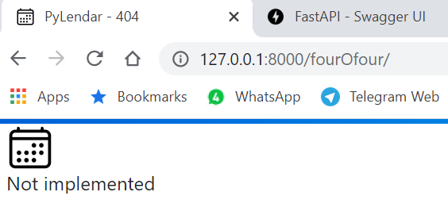
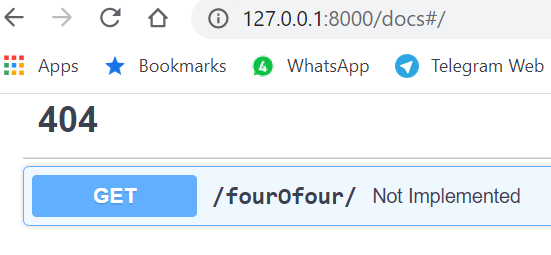

לא, השינוי הזה לא תלוי במסד הנתונים ולא יגרור בו שינוי.
האם יהיה שינוי ב־frontend? אם כן, איפה?
כן
אילו טסטים יגרמו לטיקט להיחשב כ"עובד", ויאפשרו לנו לסגור את הטיקט ולהגדיר את המשימה כהושלמה?
כל הלינקים עובדים כבעבר
9 לייקים
ron.huberfeld
אשמח לבדיקה
?
טקסט זה יוסתר
gonny
היו דיבורים על זה בקבוצת טלרגם ואין הסכמה שיש צורך בדף נחיתה או שזה אפילו יותר טוב מלתת למשתמש כניסה ישירה ללוח החודשי ורק לבקש ממנו להירשם כשהוא ינסה לבצע פעולה שדורשת הרשמה.
ron.huberfeld
דרך אגב, אפשר לתת למשתמש לבחור אם להרשם או להכנס בתור אורח כדי להתנסות במערכת.
זה לא מתנגש עם דף הנחיתה.
כפתור ההתחלה בדף הנחיתה יכול להפנות לדף ההתחברות/התנסות.
aviadamar
לדעתי מאוד הכרחי שיהיה דף כזה.
כמובן צריך לשים לב שלמעלה לא כדאי שיהיה את כל התגיות אלא רק sign in \ out וabout
לדעתי זה צריך להיות מורכב מהמסך שהראת ואולי עוד תוכן רלוונטי כאשר גוללים למטה (סטייל באתר של apple שנכנסים לקרוא על מוצר מסויים יש סקשנים שמדברים על מרכיבי המוצר \ פיצרים יחודיים וכו… )
לייק 1
ron.huberfeld
אני מתכנן רק שינויים קוסמטיים (כמו הדוגמה שנתתי).
אני לא נוגע בדפים אחרים למרות שהם ישתנו כתוצאה משינויים בסטייל css.
בנוסף אני אפנה לינקים לא מוכנים לדף 404 -




{kind=link}